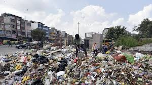

Delhiites May Have To Leave City To Make Room For Garbage: High Court

The court warned authorities of stringent penal action if anyone dies or gets infected by vector-borne diseases such as dengue and chikungunya.
DELHI: Anguished over lack of cleanliness and hygiene in parts of Delhi, the Delhi high court said today that the city will die if the situation does not improve as people may have to move out to make room for the increasing garbage.
The court warned authorities of stringent penal action if anyone dies or gets infected by vector-borne diseases such as dengue and chikungunya. It said if immediate action is not taken by the centre, the Delhi government or the civic bodies, it will be forced to take strict action against all of them.
At least 12 cases of dengue have been reported in Delhi till April 7, according to a municipal report released on Monday, indicating early spread of the vector-borne disease.
The high court bench lamented that there appear to be "no sensitivity" towards health and entitlement of citizens to a clean environment.
The court said it was concerned with citizens's right to life. "No human or animal should be co-existing with garbage," it said, adding: "This is 21st Century India, you can't make people of Delhi live like this."
The bench said it was "high time that those responsible for hygiene and cleanliness are held responsible for their deficiencies"
"We see no reason as to why in event of any death caused by vector-borne diseases, persons heading the concerned departments in Union of India, Delhi government and municipal bodies be not charge with culpable homicide not amounting to murder and those who are infected and does not result into a death be charged with section 269 (negligent act likely to spread infection of disease dangerous to life) of IPC as well as other penal provisions," it said.
It also observed that every time the court calls senior officials before it, some improvement happens but thereafter, nothing happens.
Man Shot Dead In Delhi By Wife's Brother In Alleged Case Of Honour Killing
NEW DELHI: 26-year-old man was shot dead by his brother-in-law in a suspected case of honour killing in north east Delhi on Saturday. The accused has now been arrested from Ghaziabad, the police said.
Additional deputy commissioner of police (north east Delhi) RP Meena said the incident was reported around 2 pm on Saturday.
The deceased, Atif, was shot in the head allegedly by his brother-in-law Akram at Meet Nagar in Delhi. The victim was rushed to GTB hospital where he died while being treated for his injuries, the officer said.
20-year-old Akram was arrested on Tuesday from Ghaziabad's Dabur Talab at Loni. A country-made pistol, which was allegedly used in the crime, was recovered from him, Mr Meena said.
During interrogation, the accused said his younger sister had married Atif against the will of his family which prompted Akram and his father Rahisuddin to conspire and kill Atif, the police said.
COMMENTS"He invited his sister and Atif to settle the issue and carried a loaded pistol. When Atif and his wife reached at the designated spot for the meeting, after some brief talks, Akram shot Atif and fled from there," RP Meena said.
Delhi Government To Give Rupees 14 Lakh To Gold Medalist Manika Batra
NEW DELHI: Deputy Chief Minister Manish Sisodia today said the Delhi government will give Rupees 14 lakh to paddler Manika Batra for winning a gold medal in table tennis at the Commonwealth Games 2018 in Australia.
He announced in the Delhi assembly that the reward will be given to Ms Batra under the sports policy of the government.
"The Delhi government will give Rs. 14 lakh to Manika Batra," the deputy chief minister told the House.
Under the policy, Rs. 14 lakh is given to a CWG gold medal winner, while Rs. 10 lakh is given to silver medal winner, Mr Sisodia said.
COMMENTSHe said Rs. 6 lakh is given for winning bronze medal at Commonwealth Games. Speaker Ram Niwas Goel and other legislators congratulated Ms Batra for winning the gold medal.
On Sunday, Ms Batra inspired India to a historic gold medal with her stunning singles victories in Table Tennis, fashioning an unthinkable 3-1 win over formidable Singapore in the final of the women's team event at the Commonwealth Games in Gold Coast.
Wing Of Jet Airways Plane Grazes Catering Van At Delhi Airport
NEW DELHI: A serious accident was averted at Delhi's Indira Gandhi International Airport on Sunday night when the wing of a Jet Airways aircraft hit a catering van on the tarmac, news agency Press Trust of India reported.
The plane was carrying 133 passengers on board, airport officials said. No one was injured when the plane's wing hit the van at 8 pm.
The Jet Airways flight that came from Dubai was moving to the parking bay at Terminal 3 when its right wing hit the truck belonging to caterer TajSATS Air Catering Ltd, a Delhi airport official said.
COMMENTS"All the 125 guests and 8 crew members deplaned safely and the B737 aircraft is currently being inspected by the airlines technical team," a Jet Airways spokesperson told news agency PTI.
"Jet Airways is investigating the incident, which has also been reported to the authorities," the spokesperson said.